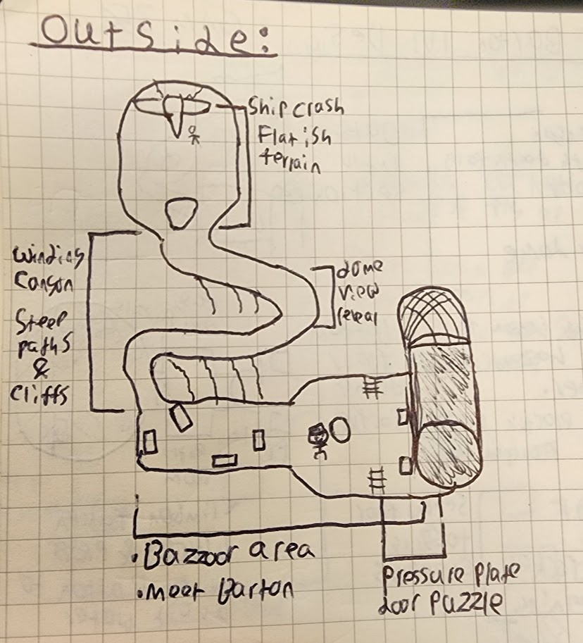
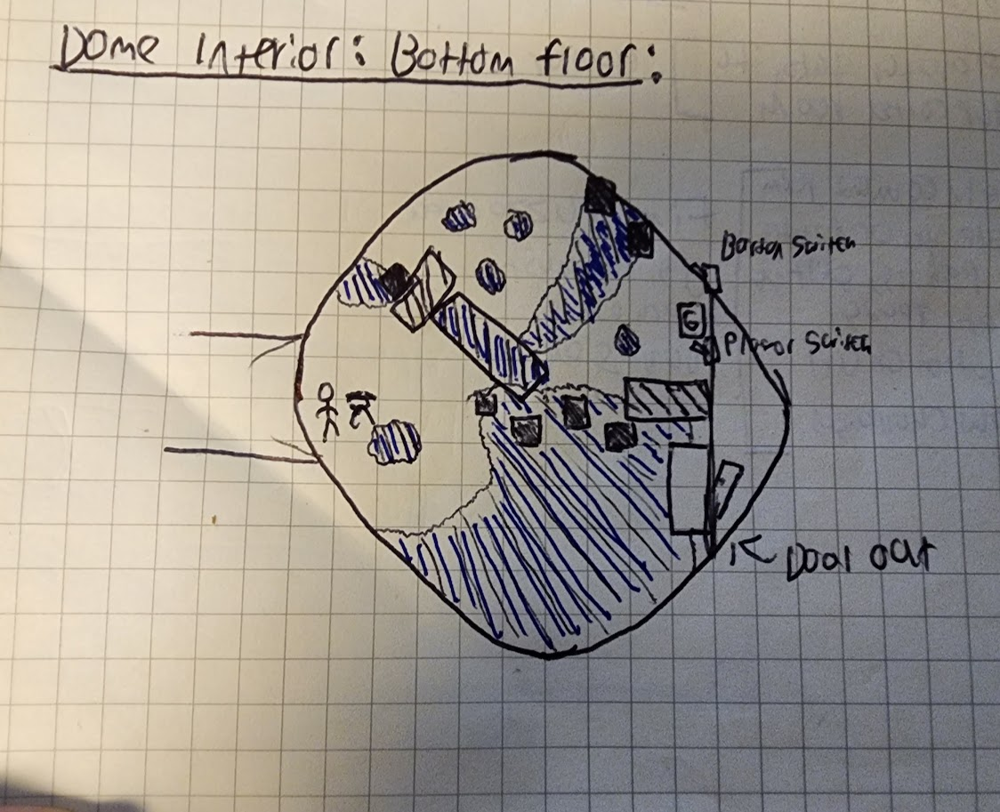
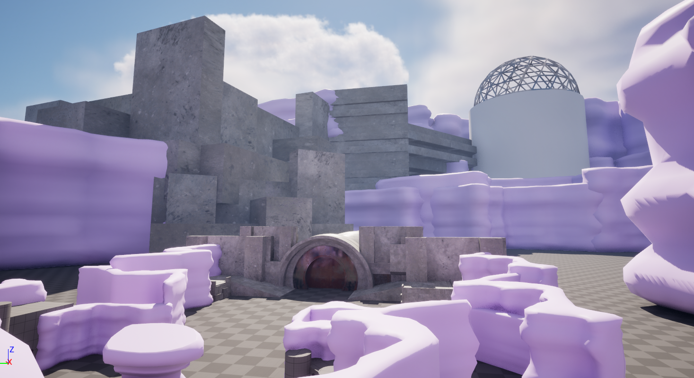
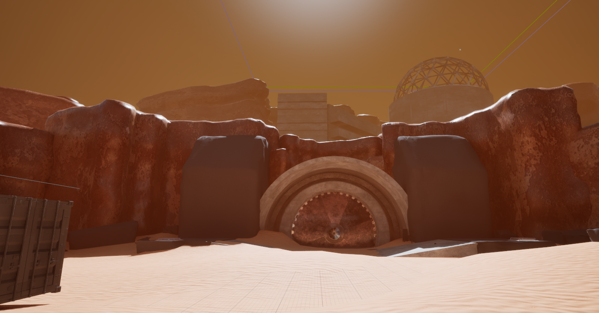
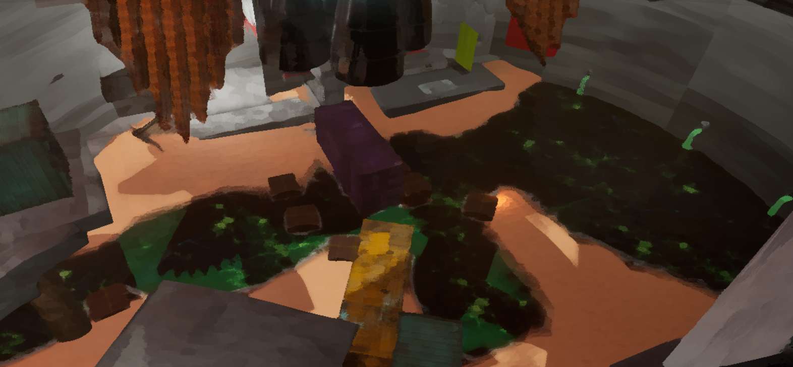
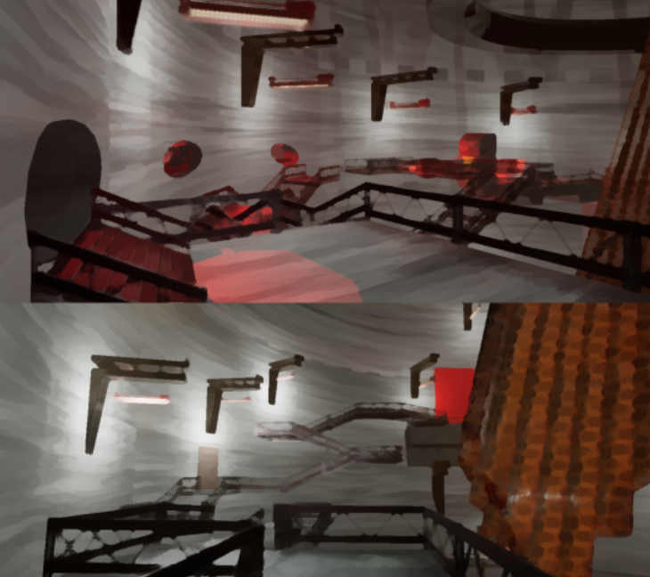

A sci-fi themed puzzle adventure, where the player has an open dialogue with a companion bot named Barton. Built by a 21-person academic team in Unreal Engine 5.
A sci-fi themed puzzle adventure where the player builds a relationship with a companion bot named Barton.
Barton's dialogue is powered by a large language model (ChatGPT 4o mini). Through prompts and player inputs, you and Barton can discuss objectives, make decisions together, and shape the tone of the journey.
Built by a 21-person academic team in Unreal Engine 5.
Generative AI was only used for text responses. All design, art, programming, and production work was created by our team, Wise Reply.
21 Person Team
Unreal Engine 5
8 Months of Development
My Roles
Being the only level designer on this project provided me with a lot of freedom to make creative choices about spatial layouts, puzzle design decisions, and shape the pacing of the game as a whole. It was a very big responsibility I never took lightly. I also served a user research role while working on Barton. Because I had a lot of agency with the level design choices I was making, I needed to ensure that the choices I was making were effective, and our players felt and experienced the intended atmosphere, tone, and gameplay beats of our levels.
Sole Level Designer
As the only level designer on the project, I owned the layout, pacing, and puzzle framing for both interior and exterior spaces.
I coordinated closely with design and tech teammates so level changes would support Barton’s AI behavior, puzzle readability, and traversal reliability.
I also partnered with environment artists at both macro and micro scales to align composition, architecture, and gameplay beats.
Qualitative User Researcher
I ran weekly playtests using participant observation and semi-structured interviews, primarily with convenience-sampled peers and friends.
These sessions gave me recurring insight into navigation clarity, puzzle comprehension, and emotional tone across the player journey.
I also ran two focused studies: one on readability and flow over time, and one comparing briefed players versus blind players.
The briefed-vs-blind study showed no significant differences in key outcomes.
The flow-over-time study showed April 2025 playtesters had clearer goals and easier navigation than March 2025 playtesters.
Level Design Process
My process combined encounter prototyping, path and flow tuning, and repeated readability passes to keep guidance clear without removing player agency. Working closely with environment art, and tech team to ensure smooth implementation in our levels.
Concepting & Top-Down Maps
After the high level concept for these spaces were decided by the team, the first phase of my process was to ideate on paper about what these spaces could look like!

Various iterations on paper for the interior floors and puzzle design decisions helped me determine what could work in preproduction, so as to not waste time during full production.
These spaces changed in different ways once implemented in engine, but these initial top-down maps aligned designer goals and served as an essential blueprint for the next phase of the process, blockmeshing in engine!
Blockmeshing in Unreal
With top-down maps and documentation for the game in place, I went about iterating on the 3D spaces of Barton. Building out spaces with simple geometry first allowed me to quickly tweak and play with pacing, level beats, and tempo of the experience.

A blockmesh of the original facility exterior. The main components of this composition remained in the final version of the game, but the spacing and assets changed drastically.

Changes to the bottom floor over time. Where the water hazards and jumps are placed, the ways the cargo containers framed the elements and landmarks of the level, and noting spots of friction or elements of the level Barton had trouble contextualizing with were all things I was considering throughout the iteration process!
A rough but functional blockout of the first and second floor of the facility. The circumference of the silo ended up being too large, shrinking by about a quarter for the final iteration. These changes subsequently made us alter the prop placement, terrain, and sightlines, as they all changed rapidly in this early stage.
Testing & Iterating
This was the bread and butter of my process. How are the changes I'm making within the level affecting user experience and flow of the game? I only had a couple of months to fully test out these spaces, so working quickly and precisely to make changes was key. I was also running weekly playtesting, and conducting two research studies regarding level flow and experience over time.
Swapping out the graybox for final structural assets — like the walls in bright colors depicted here — forced me to ensure the spacing, pacing, and elements of the level aligned with what was originally planned. But when things didn't go according to plan, it meant sometimes making educated guesses, or following my gut to shift props, lights, catwalks, or the precise location of triggers in the level.

Catwalks and navigation along the second floor. It was important that the relative spacing and flow of these level sections were established and tested ASAP, as our art team was on a tight schedule. We had to know that the art and assets we were asking them to make worked within the primitive outline and structure of our game. Iterating on these spaces until I felt they properly served the level goals was a key step of the process — and one I was under a strict time limit to achieve.
Final Polish
Before the proper level lock where I needed to be entirely hands off was where I made final tweaks and polish. Had the environmental set dressing accidentally affected collisions or readability of a space? Were there still soft locks in the level? Were there bugs with interacting with triggers? And was the companion bot Barton being an unruly goober? Oh yes…
This final polish phase had me on the lookout for all of these potential problems. It also allowed me to see my ugly blockouts swapped with proper assets, and watch a previously barren but functional level space become vibrant and alive. So satisfying!
For a deeper look at scene compositions, and how I framed elements in Barton, read my blog post!
Barton was created in Unreal Engine 5. Two semesters (about 30 weeks) of development time was allocated. Our team, Wise Reply, consisted of 20 people: 5 designers, 5 programmers, 9 artists, and 1 sound designer.
We sought to create a unique experience where the player crash lands on a desolate planet, and must work with a quirky bot named Barton, to ascend an abandoned research facility, and escape together. All while the player and Barton can converse back and forth with each other, building a rapport and relationship that's entirely unique. Because of Barton's dialogue being non deterministic, no one playthrough will ever be the same as the last.
We mainly wanted to emphasize the player building a connection with Barton through gameplay. Thus, the subsequent puzzles and obstacles the player and Barton faced were created not to necessarily challenge the player, but to give them meaningful goals and objectives to overcome together.
The player and Barton work together to open a door leading deeper into the facility.
Team Collaboration
I worked with the other designers to narrow down the many affordances of Barton. Or in other words, what he can and can't do and interact with within the game world. This was shaped by testing and iterating based on prototyping different puzzles and mechanics the player and Barton could contextualize with.
We wanted the player and Barton to have an interesting variety of mechanisms to interact with, and environments to pass through. The pressure plate functions differently than a lever, but both can be recognized as a key-word for Barton, allowing him to recognize and interact with these objects.
I worked with programmers and technical designers to ensure that Barton was able to function in the level spaces I was creating. Tweaking Barton's interactions and ensuring that every available option the player had to pass through a challenge worked as intended, was at times quite difficult.
I worked very closely with the environment art team to ensure that the assets from micro to macro scale were properly integrated within level spaces. This ranged from tweaking the positions of props to improve sightlines or guidance. Or it was as extreme as replacing the prototyped blockmesh space of the entire interior (where most gameplay occurred), with finalized assets created by the art team.
Screenshots from the final version of the environments for Barton.


Barton2ndfloorMap.jpg)
BartonDomeFinalFloorMap.jpg)
Facility2ndfloorBlockmesh.png)
BartonGreyBoxin.png)